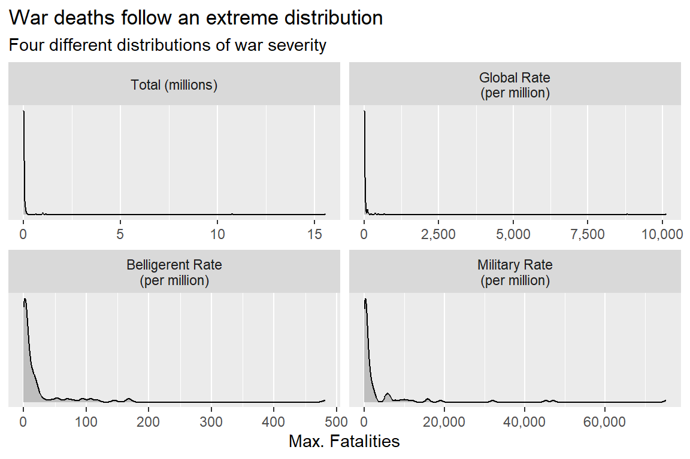
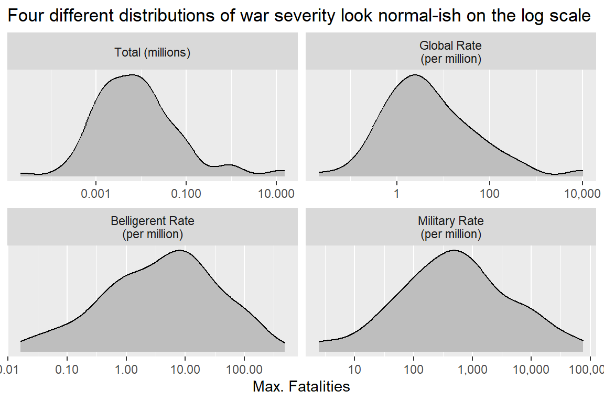
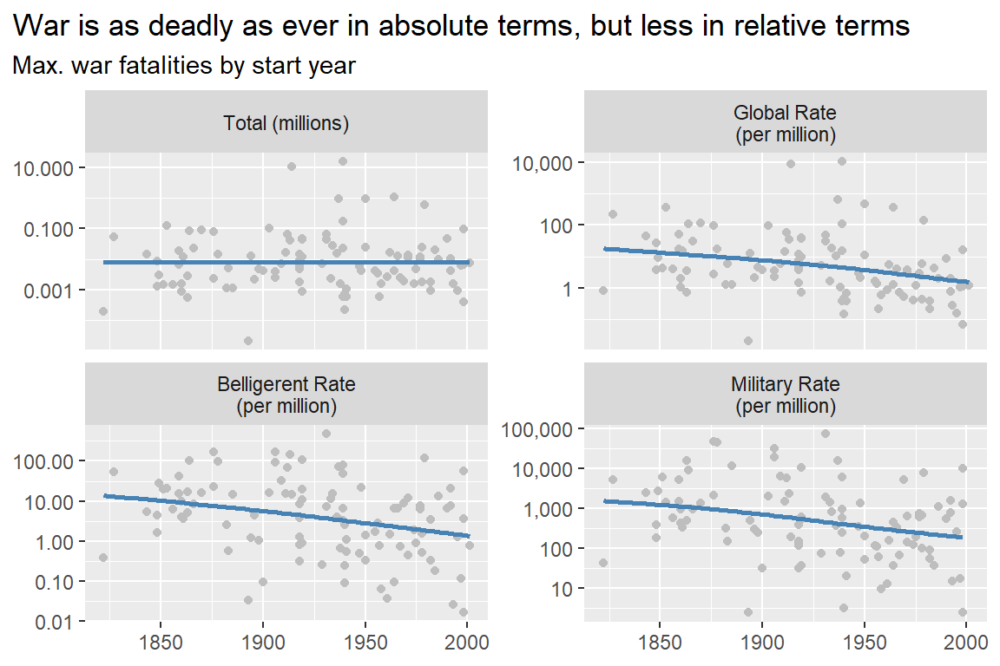
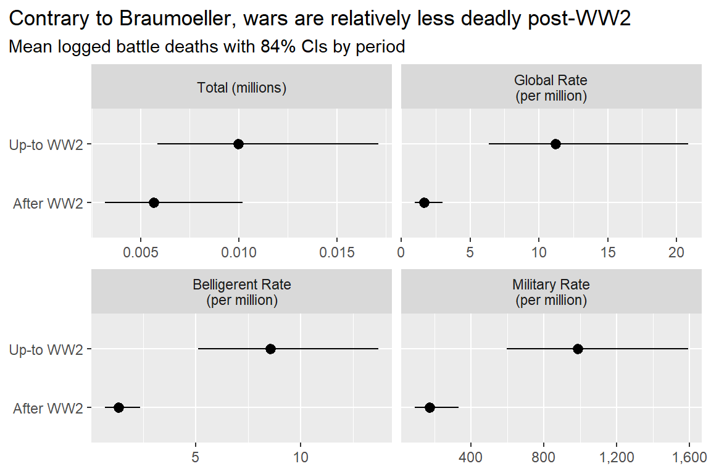

## set up
library(tidyverse)
library(socsci)
source("https://raw.githubusercontent.com/milesdwilliams15/death-destruction-data/refs/heads/main/helpers/get_mie_data.R")
## get the cleaned up data
get_mie_data() -> dt4 Is War Less Deadly?
Main ideas:
The decline of war thesis holds that wars are becoming less deadly in addition to less common.
Testing this claim is tricky for conceptual, statistical, and theoretical reasons.
An analysis with the MIE dataset offers some mixed results that don’t neatly support, but also don’t clearly refute, the idea that war is becoming less deadly.
4.1 Decline of War Thesis and War Severity
Recall from the last chapter that the decline of war thesis has two main pillars:
- War is becoming less common.
- War is becoming less deadly.
I covered the first pillar in the previous chapter, discussing a mix of conceptual and theoretical issues, in addition to measurement and statistical inference. A reasonable conclusion you can draw from the data is that war propensity (the measure I adopted for quantifying the potential for war per opportunities for countries to fight) has been mostly stable over the past 200 years. Notable exceptions were the early 19th century which was unusually peaceful, and the early to middle 20th century, which witnessed two world wars. Contrary to the decline of war thesis, the late 20th and earlier 21st centuries appear about as warlike as the historical average.
In this chapter, I want to turn to the second pillar of the decline of war thesis and ask: is war becoming less deadly?
As you’ll see, answering this question requires addressing a range of thorny conceptual issues. I’ll specifically address three: (1) issues with measurement, (2) issues with statistical inference, and (3) issues with theoretical explanations.
After I discuss these issues, I’ll walk through an applied example using the militarized interstate event (MIE) dataset. As you’ll see by the section header, I’m calling my example a “low-tech” replication of the analysis Braumoeller (2019) did in his book, Only the Dead. It’s low-tech because Braumoeller used a sophisticated statistical model that I think is best ignored in an undergraduate class. As it so happens, I also think that his sophisticated method was actually unnecessary, and the new MIE dataset I’ll use (which Braumoeller didn’t have access to) will help me make this point.
Without further ado, let’s get to it.
4.2 Three Problems with Studying War Severity
Before you can test the claim that war is becoming less deadly, you need to contend with a few issues. The first deals with measurement, which requires thinking carefully about what is meant by the “deadliness” of war. Do you mean absolute deadliness, or deadliness relative to something else? If you mean the latter, what’s that something else?
The second deals with statistical inference. Braumoeller (2019) makes the argument that standard statistical tools are ill-suited to studying war fatalities because war size follows a power-law distribution. Power-laws apply to events that are prone to exceptionally large upswings in intensity—things that go beyond just a skewed distribution that you can handle with a simple data transformation, such as using the natural log. Because of these massive (and hard to predict) upswings, power-law data also don’t obey the central limit theorem (CLT), which is foundational to the whole enterprise of statistical analysis. If the power-law really does apply to war fatalities, you’ll have to look beyond the standard toolkit for statistical inference.
The final issue deals with theoretical explanations. The decline of war thesis holds that wars are becoming less deadly for ideological/normative reasons. But a decline in war fatalities can also be explained by other factors, like improvements in battlefield medicine, changes in the style of warfare, or a failure of war deaths to keep up with population growth (if you want to measure fatalities in relative terms). Any of these alternative explanations need not be mutually exclusive, which makes it difficult to conclude how much each mechanism contributes to an overall decline in war deaths (if such a pattern even appears in the data).
I tackle each of these issues in more detail below.
4.2.1 Measurement
The deadliness of war can be conceptualized and, therefore, quantified many different ways. Further, deadliness is just one among many dimensions of what you could call war severity. Wars can be severe not just in terms of battle deaths but also duration and the number of battles. I’ll focus just on battle deaths here, but these alternative metrics are worth keeping in mind.
A further issue centers on whether severity should be treated in absolute or relative terms. With respect to war deaths in particular, it is important to be precise about whether you think deadliness should be defined as the total body count or as a rate. If a rate, you then need to further specify what the reference point is. Some, like Pinker (2012), believe you should divide battle deaths by world population. Braumoeller (2019) argues that a better idea is to divide by the populations of the countries involved in a specific war. A third option could be to divide by the total military personnel of the countries involved.
These measurement choices aren’t just a minor technical issue. How you measure war deadliness says a lot about how you conceptualize the risk of dying in war. Dividing battle deaths by world population treats death in war like a public health issue, in the same category as the global risk of death by heart disease or stroke. Dividing battle deaths by the combined populations of the countries involved in a war, or what you can more succinctly call belligerent populations, treats the risk of dying in war as a political issue where the risk only comes into play once countries make the choice to fight. Dividing battle deaths by belligerent military personnel further constrains the population of individuals you want to treat as at risk of dying in war.
Any analysis of war deadliness, therefore, needs to clearly explain how deadliness is quantified and provide a justification for why one approach was adopted over the alternatives.
4.2.2 Detecting Changes
Beyond measurement, another issue that needs to be addressed is statistical inference. In the previous chapter, I showed you how you can use statistical inference to quantify the role of random chance (background noise) in the trend in war propensity over time. Statistics adds a layer of rigor to your analysis that “eyeballing” the data fails to provide.
Statistical inference is no less important when testing whether war is becoming less deadly, but depending on who you ask, you may need to think twice before using traditional statistical tools as opposed to more specialized ones. According to Braumoeller (2019), traditional tools won’t do. The reason, he argues, is that war fatalities follow a power-law distribution.
The idea that the power-law describes the distribution of war deaths isn’t new. In fact, the argument is quite old, dating back to the birth of quantitative peace science (and even a bit before). Braumoeller, therefore, is following a well-established tradition within the study of war.
However, this tradition has an important implication for doing statistical inference, namely, that conventional statistical tests won’t work. Under certain circumstances, power-law data do not have a finite mean or variance. Another term used to describe this scenario is “scale-free.” That means a variable that follows the power-law doesn’t have an identifiable central tendency or quantifiable variance, which makes it impossible to draw comparisons between war death deaths in different periods in time using statistics. Scale-free data also don’t abide by the central limit theorem (CLT), which is foundational to conventional statistics. The CLT holds that as you draw ever larger and larger samples, your estimates will converge toward the truth. Power-law data don’t always abide by this rule.
Braumoeller therefore proposes an alternative statistical test for whether wars are becoming less deadly that is “robust” in the face of these problems. Using this test, he fails to find good evidence that wars have become less deadly over time, and he bases this conclusion both on total war deaths and deaths per world and belligerent population.
These findings are important, but they’re premised on the idea that the power-law is the way to study war fatalities. This idea is increasingly coming under scrutiny. In a recent working paper, Spagat, Fagan, and Weezel (2024) argue that a more conventional log-normal distribution (among other alternatives) makes more sense. Further, Cunen, Hjort, and Nygård (2020) argue that an obscure model from actuarial science known as the inverse Burr is most appropriate. Other skeptical studies exist as well, and I personally have done some research in this area and have come to a similarly skeptical conclusion. Needless to say, the idea that the power-law is the law of the land when studying war just isn’t true.
As I’ll show in the analysis in a later section, war fatalities in the MIE dataset can be handled quite easily by simply taking their natural log and then performing standard tests. While I admit that this is still a live question in conflict research, I think this is a sound way to proceed, and the ranks of conflict scholars who agree seems to be growing.
4.2.3 Explaining Changes
One final issue with testing if war is becoming less deadly is identifying the best explanation for why this would be happening (if, indeed, it is). Proponents of the decline of war thesis, such as Pinker (2012), argue that ideas born of the Enlightenment such as reason, liberal democracy, human rights, and pro-peace norms can explain why wars would become less deadly over time. Because societies simply cannot stomach bloody conflicts, tolerance for exceptionally deadly wars is much lower today than decades or even centuries ago.
However, this is just one explanation among many. Some political scientists, such as Tanisha Fazal (2014), have been critical of this argument. Fazal in particular argues that improvements in battlefield medicine can explain a decline in war deadliness just as well, if not better than, humanistic norms. At one point in time, the wound-to-death ratio in war was 3-to-1. Today, for countries with modern militaries (such as the U.S.), the ratio is closer to 10-to-1. Over time, it has simply become much easier to treat wounded soldiers and keep them alive. All else equal, this means wars today would be less deadly, even though no real change in the willingness to spill blood in war has occurred.
Different styles of warfare might also influence the body count. Drones, for example, are quite deadly tools that simultaneously negate the need to put your own troops in harms way. The increasing reliance by countries like the U.S. on special forces units and targeted operations likewise can limit how deadly a conflict is. Tactics and technology, in short, matter as well.
One final explanation, which Braumoeller (2019) himself raises, deals with conflict death rate measures specifically. He notes that finding a decline in war fatality rates could mean that conflict really is less deadly for normative and ideological reasons, but it could just as easily mean that population growth has exceeded war’s deadliness. Population growth is well known to be exponential, which, by Braumoeller’s lights, makes a decline in war fatality rates much less compelling a data point than proponents of the decline of war thesis make it out to be.
In sum, to use some jargon, an observed decline in war deaths is overdetermined. This term refers to an event, trend, or pattern in the world has many different, equally valid theoretical explanations (far more than are necessary to actually account for it).
Keep this point in mind, not just when I show you some results from the data in the next section, but also for any analysis you encounter or personally conduct on war or some other subject. An ideal analysis simultaneously will provide a good empirical test of a theoretical argument and rule out alternative explanations. The first objective is hard enough. The second is nearly impossible.
4.3 A Low-tech Replication of Braumoeller’s Work
The previous sections covered some issues with measurement, inference, and explanations for declining war deaths. In this section I want to show you some practical solutions.
I call this section a low-tech Replication of Braumoeller’s work because I will not ask you to implement the specialized methods he used in his book, Only the Dead. As I noted in the previous discussion, I have some qualms with his approach. As you’ll see, with the MIE dataset I think it’s quite clear that a simple log-transformation of battle deaths is sufficient to address the problems about which Braumoeller (and many others) expressed concern.
This solves the issue with inference, but what about measurement? I’ll leave the question of which measure of war severity is best to others. Here, I’ll simply show you how to implement four alternatives, and offer a quick summary of their interpretations.
Finally, I sadly have not solved the overdetermination problem. So once I show you some results, you and I will have to settle for an empirical reality with a cause that remains a puzzle.
4.3.1 Get the Data
First of all, I need to get the MIE dataset. As I showed you in the previous chapter, you can run the following code in R, which will get and automatically clean it.
For this analysis, I need more than just the MIE dataset, however. I need to create four different measures of how severe wars are over time in terms of battle deaths: (1) total deaths, (2) the global death rate, (3) the belligerent death rate, and (4) the military death rate. I can get the first from the MIE dataset alone, but to get the last three I need more data. For the global death rate, I need the total population of countries in the world; for the belligerent death rate, I need the total population of the countries involved in a given war; and for the military death rate, I need the total military personnel of the countries involved in a war.
Thankfully, I don’t need to look too far to get this data. Steve Miller, one of the researchers responsible for the MIE dataset, created an R package called {peacesciencer} meant to make it easier to access common variables and datasets for doing peace science research (Miller 2022). To install it, all you need to do is run install.packages("peacesciencer"). Once you do, you now have access to a wide variety of datasets using the {peacesciencer} API, which stands for augmented programming interface.
With this package, I can access one dataset in particular that has all the information I need to complete my analysis. The Correlates of War (COW) Project has a dataset on the military capabilities of countries across the world. It’s called the National Material Capabilities (NMC) dataset. It’s been around for a long time (see J. D. Singer, Bremer, and Stuckey 1972; D. J. Singer 1987), and it’s used to construct an index of country military power known as the Composite Index of National Capability, or CINC (I’ll talk more about this measure in the next part of this book). Most useful for the moment is the fact that both population data and military personnel counts are necessary to construct CINC scores for countries. The NMC dataset therefore has all the data I need for this analysis. Even better, {peacesciencer} gives me access to the most recent version of the data (version 6) which covers the whole time period from 1816 to 2014 covered by the MIE dataset.
Here’s how to access the data. Once you have {peacesciencer} installed, you can run the following code. It opens the package, and then it creates a dataset of all the country pairs (dyads) in the world by year according to the COW state system coding rules. It then adds information from the NMC dataset and saves the output as an object called ext_dt. Next, it merges this dataset with the MIE dataset by each country in a dyad and the year a conflict took place.
## get NMC data (has population and military totals)
library(peacesciencer)
create_dyadyears(subset_years = 1816:2014) |>
add_nmc() -> ext_dt
## merge with MIE data
dt |>
left_join(
ext_dt,
by = c("ccode1", "ccode2", "year")
) -> dtNow, I have all the data I need to test if war deaths are declining. I just need to process it a bit more to get it ready, which I do in the next section.
4.3.2 Data Processing
To get the data ready for analysis I need to transform it. First of all, each row in the dataset is a unique event, but the decline of war thesis claim that wars are becoming less deadly doesn’t explicitly apply to the deadliness of particular battles. Rather, it applies to the body count by the end of a whole conflict. Therefore, I need to aggregate the data to the conflict level.
Remember that in the MIE dataset, individual militarized interstate events (MIEs) are embedded in militarized interstate confrontations (MICs). I need to aggregate the data to the MIC level. The below code will do this. For each MIC, it will give me the sum of all battle deaths (both the min and max estimates), the start year, the maximum hostility level, the pooled population and military personnel of belligerents, and some other summary stats that might be interesting to look at later.
dt |>
group_by(micnum) |>
summarize(
year = min(year),
hostlev = max(hostlev),
fatalmin = sum(fatalmin1 + fatalmin2),
fatalmax = sum(fatalmax1 + fatalmax2),
events = n(),
duration = 1/12 + max(endyear + endmon / 12) - min(styear + stmon / 12),
bellig_pop = sum(tpop1[year == min(year)] +
tpop2[year == min(year)], na.rm = T) * 1000,
mili_pop = sum(milper1[year == min(year)] +
milper2[year == min(year)], na.rm = T) * 1000
) -> war_dtNext, I need to bring in the total world population per year. This next bit of code will take the dyad-year dataset with the NMC variables and extract from the data a measure of the total population of all countries in the COW system by year. It then merges this total with the MIC level dataset by conflict start year.
ext_dt |>
distinct(ccode1, year, tpop1) |>
group_by(year) |>
summarize(
world_pop = sum(tpop1) * 1000
) -> pop_dt
war_dt |>
left_join(
pop_dt,
by = "year"
) -> war_dtFinally, in keeping with tradition for this kind of analysis, I’m going to only keep MICs that actually escalate to the level of a war. The criteria for this categorization in the MIE dataset is a bit different than for the COW wars dataset I talked about a couple of chapters ago. Rather than using a strict battle death threshold, it categorizes MICs as wars that most historical records recognize as all-out wars.
war_dt |>
filter(hostlev == "War") -> war_dtNow, I just need to do one more thing. So that I can do some analyses more conveniently across all four different possible ways of quantifying how severe wars were, I’m going to pivot the data and generate a column that has all the war severity measures in one, and the appropriate measure label in another. I’ll just take a look at maximum fatality estimates. You can think of this as a worst-case scenario for conflict severity.
war_dt |>
# add a costant of 1 trillion
mutate(const = 1e12) |>
# pivot by pop data and the constant
pivot_longer(bellig_pop:const) |>
# divide by the appropriate pop/constant value (in millions)
mutate(
value = 1e06 * fatalmax / value,
name = frcode(
name == "const" ~ "Total (millions)",
name == "world_pop" ~ "Global Rate\n(per million)",
name == "bellig_pop" ~ "Belligerent Rate\n(per million)",
name == "mili_pop" ~ "Military Rate\n(per million)"
)
) |>
# filter out a couple of cases with missing personnel
filter(value < Inf) -> piv_war_dt4.3.3 Analysis
Okay, now the data is ready to go, so let’s start start analyzing it. First, I want to just take a look at the raw data.
The below code will produce a plot with four panels, each showing the distribution of one of measures of conflict fatalities. As you can see, war deaths follow an extreme distribution, with lots of small wars and a few exceptionally deadly ones. This is true whether looking at total deaths, or calculating the rate per world or belligerent population, or military personnel.
ggplot(piv_war_dt) +
aes(value) +
geom_density(fill = "gray") +
facet_wrap(~ name, scales = "free") +
labs(
title = "War deaths follow an extreme distribution",
subtitle = "Four different distributions of war severity",
x = "Max. Fatalities",
y = NULL
) +
scale_y_continuous(
breaks = NULL
) +
scale_x_continuous(
labels = scales::comma
)
This is consistent with Braumoeller’s (2019) point that war deaths are prone to extreme upswings in deadliness, but it does not further imply that specialized statistical tools are necessary to make inferences with the data.
Here’s what happens when you take the log of battle deaths. The below code produces a figure like the last one, but it puts the battle death values on the x-axis on the log-10 scale (which is proportionally equivalent to the natural log, which is more common in political science research). Once the data is re-scaled in this way, its distribution looks much closer to normal, particularly for the belligerent and military personnel fatality rates. This seems to line up with the findings of Spagat, Fagan, and Weezel (2024), who argue that the data looks log-normal—which is to say, it has an identifiable mean and variance, unlike many variables that follow the power-law. To me, this serves as a nice gut-check that using more conventional statistical methods is a viable option.
ggplot(piv_war_dt) +
aes(value) +
geom_density(fill = "gray") +
facet_wrap(~ name, scales = "free") +
labs(
title = "Four different distributions of war severity look normal-ish on the log scale",
x = "Max. Fatalities",
y = NULL
) +
scale_y_continuous(
breaks = NULL
) +
scale_x_log10(
labels = scales::comma
)
So what happens when I apply more conventional methods? I can proceed a couple different ways. First, I can just plot the data over time and run a smoothed regression line through the data to see if a meaningful trend (signal) shows up.
The below code produces a scatter plot and adds a smoothed line from a generalized additive model (GAM). This is my go-to method for plotting a line through data because GAMs have a really nice property of only fitting a trend if the bumps and curves in a dataset are big enough to rule them out as the result of random background noise. You can see this property on display in the figure below, which only shows a flat line for total battle deaths, but downward curved slopes for the remaining three measures.
ggplot(piv_war_dt) +
aes(year, value) +
geom_point(color = "gray") +
geom_smooth(method = "gam", se = F, color = "steelblue") +
facet_wrap(~ name, scales = "free_y") +
scale_y_log10(
labels = scales::comma
) +
labs(
title = "War is as deadly as ever in absolute terms, but less in relative terms",
subtitle = "Max. war fatalities by start year",
x = NULL,
y = NULL
)`geom_smooth()` using formula = 'y ~ s(x, bs = "cs")'
This method is different from the one applied in the last chapter looking at conflict occurrences, but you could just as easily apply it there. You could also use the binning method used in the last chapter here. However, because there are fewer overall data points in this analysis, you might run into some issues in some bins if they’re too small.
But, if you wanted to bin the data, the best place to start is just to compare conflicts after World War 2 to those before and up to it. This is the approach Braumoeller took in his book.
Here’s how to implement this approach. First, read in the source file that gives you access to the function mean_ci_boot(), and then group the data by period and measure of war severity. Next, calculate the average of the logged fatalities with 84% confidence intervals. For plotting, it might be a good idea to convert the estimates back to their original scale so you can get a clearer sense of proportion (you can just take the exponent of the results). Consistent with the findings above, only in the case of total war deaths do I fail to rule out background noise as the cause of post- versus pre-WW2 differences in war severity. But, when expressed as a rate, the evidence looks quite clear that wars over time have become less deadly.
source("https://raw.githubusercontent.com/milesdwilliams15/death-destruction-data/refs/heads/main/helpers/other_helpers.R")
piv_war_dt |>
mutate(
postww2 = ifelse(year > 1939, "After WW2", "Up-to WW2")
) |>
group_by(name, postww2) |>
summarize(
mean_ci_boot(log(value)) |> exp()
) |>
ggplot() +
aes(x = mean, xmin = lower, xmax = upper, y = postww2) +
geom_pointrange() +
facet_wrap(~ name, scales = "free_x") +
scale_x_continuous(labels = scales::comma) +
labs(
title = "Contrary to Braumoeller, wars are relatively less deadly post-WW2",
subtitle = "Mean logged battle deaths with 84% CIs by period",
x = NULL,
y = NULL
)
The contrast between these results and those shown in the last chapter is interesting. The contrast with Braumoeller’s findings is as well. On the one hand, the analysis in the last chapter fails to show compelling evidence that war is less likely today than in the past. To the contrary, the early 19th century was the most peaceful period on record covered by the MIE dataset. On the other hand, the fatality rate from wars has steadily declined over the same period; albeit, with no apparent decline in war deaths in absolute terms.
In short, the data doesn’t seem to neatly align with the decline of war thesis, but it also doesn’t perfectly fit with the findings in Braumoeller’s comprehensive analysis in Only the Dead (Braumoeller 2019). While wars seem to have a fairly stable chance of occurring over time, the risk of dying in a war has gone down for the average person anywhere in the world, for a person that’s a citizen of one of the countries involved in a war, and for military personnel.
Does this mean the decline of war thesis is half right? Maybe, but remember the theoretical issues I discussed earlier. A decline in war deaths could show up in the data for reasons that have nothing to do with the mechanisms decline of war thesis proponents argue are at work. Deaths could decline because of improvements in battlefield medicine, changes in warfighting, and exponential population growth.
It’s impossible to completely rule out any one of these explanations, but I’ll give you my opinion. I think battlefield medicine is the most compelling argument, followed by changes in how wars are fought. Fazal’s (2014) analysis provides hard to refute evidence that the typical soldier today has a much lower chance of dying on the battlefield than in the past. Battlefield medicine (and medicine in general) has advanced so much over the past century, and even more so the past few decades, which, by the way, would explain why the trend in the data is a downward sloping curve instead of a simple straight line when measuring the fatality rate.
Changes in tactics also seem like a contributing factor. With few exceptions, most conflicts in recent history aren’t fought on conventional battlefields with armed troops engaged in face-to-face combat. This clearly means a smaller share of a country’s troops are in harms way.
I find exponential population growth less compelling. The reason is that the conflict rate also declines over time per military personnel (the sub-population most at risk of dying in war). As Braumoeller (2019) notes, militaries grow at a much slower rate than country populations, mainly because once your fighting force reaches a critical mass, adding more troops to the ranks doesn’t make a massive difference in capabilities. Warfighting technologies tend to give you a bigger bang for your buck, so to speak. So the fact that war deaths don’t also keep up with military size gives me doubts that population growth alone explains a decline in fatality rates.
I find shifting norms around war the least compelling, mainly because the risk of war has remained fairly stable over time. Also, total war deaths have remained constant over time as well, suggesting that just as many people can die in wars today as in the past. If norms and ideology are really driving trends in a meaningful way, I’d expect to see movement in these metrics as well. That movement just doesn’t exist.
This, of course, is just my opinion. You may draw different conclusions from the data.
4.4 Summary
In this chapter I introduced concepts and methods essential for testing whether war is becoming less deadly. On the theoretical side, there are lots of issues you need to contend with, and on the conceptual and measurement side, there are tough judgment calls that need to be made.
While the analysis I presented supports certain conclusions, I hope you’re starting to appreciate that data analysis in the peace science tradition involves some subjectivity about what counts and what doesn’t. I think this fact isn’t something to bemoan but to embrace, because it means the peace scientist’s work is never finished. Many unanswered questions remain, and more perspectives are necessary if further progress is to be made.